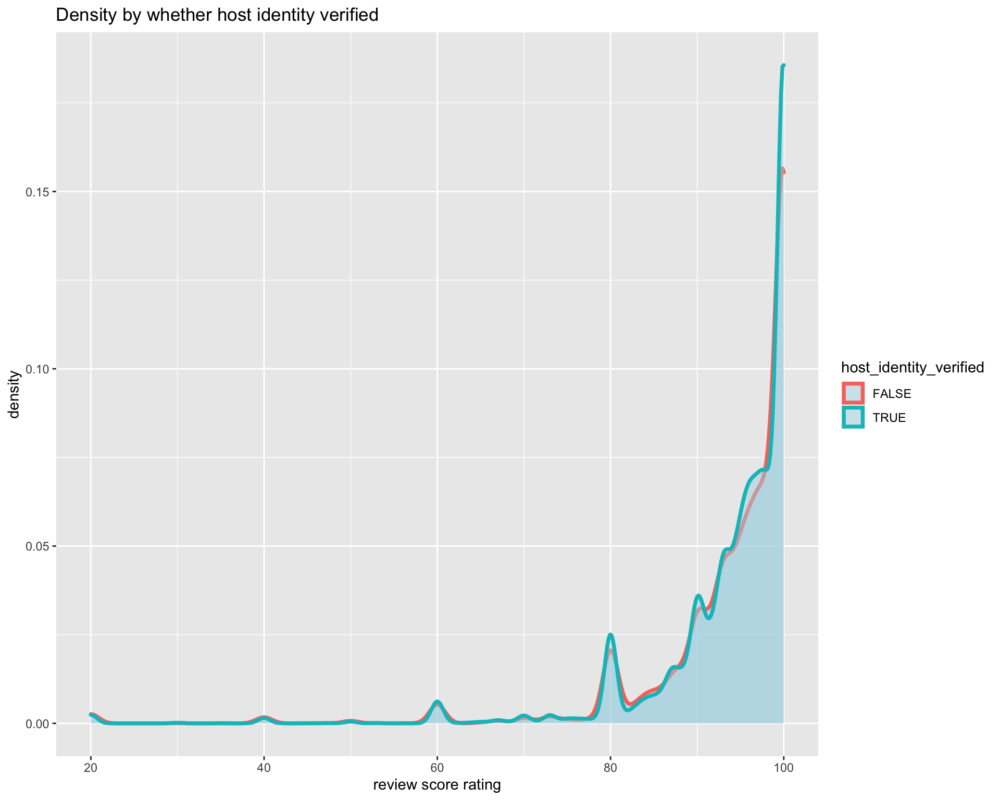
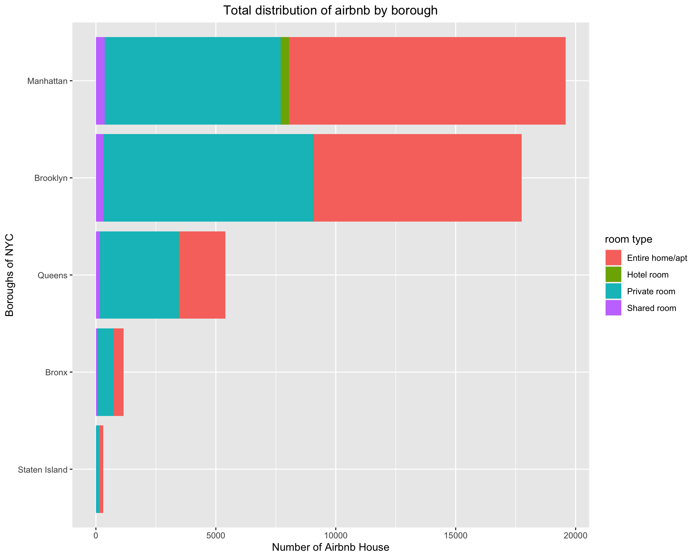
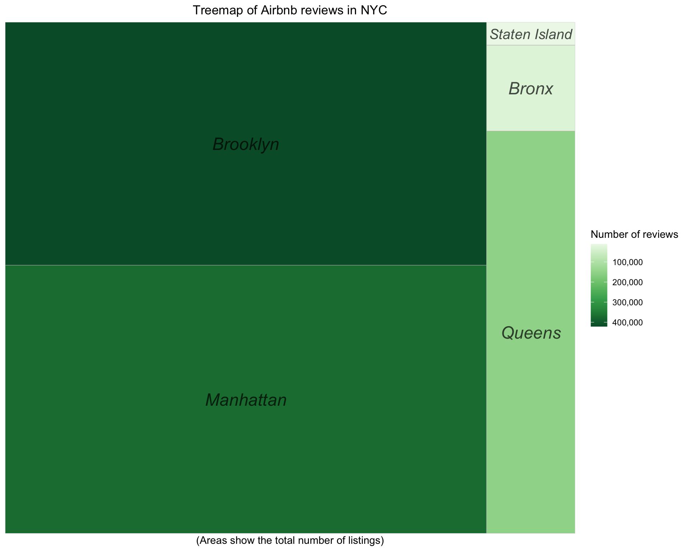

Chapter 4 Results
4.1 Data processing
Since the original data are very dirty, we processed it first directly in excel and loaded it to R software for further processing.
## host_response_rate host_acceptance_rate review_scores_location
## 22892 16754 11484
## review_scores_value review_scores_checkin review_scores_accuracy
## 11483 11479 11464
## review_scores_communication review_scores_cleanliness review_scores_rating
## 11459 11451 11432
## last_review reviews_per_month host_listings_count
## 10394 10394 5540
## host_since host_has_profile_pic host_identity_verified
## 17 17 17
## id host_id neighbourhood_group
## 0 0 0
## latitude longitude room_type
## 0 0 0
## accommodates price availability_30
## 0 0 0
## availability_365 number_of_reviews
## 0 0The brief understanding of the data is that there are 44187 airbnb houses collected in this dataset and 26 features are scraped which can be gathered into three main feature group, ie, house information, host information, evaluation information
House information (10 features): id, host_since, neighbourhood_group, latitude, longitude, room_type, accomodates, price, availability_30, availability_365
Host information (6 features): host_id, host_response_rate, host_acceptance_rate, host_listings_count, host_has_profile_pic, host_identity_verified.
Evaluation information (10 features): number_of_review, last_review, review_scores_rating, review_scores_accuracy, review_scores_cleanliness, review_scores_checkin, review_scores_communication, review_scores_location, review_scores_value, review_per_month
4.2 How does airbnb in New York develop these years
First, we have a status analysis by a stack bar chart, from which we can have several observations.
Manhattan and Brooklyn are the main regions where airbnb house are located, Bronx and Staten Island have pretty low number of airbnb houses.
Entire home/apt and Private room are the main type of room, only Manhattan has “Hotel room” room type.

Besides status analysis, we are more curious about the development of airbnb house in New York with year. We plot the number of new hosted airbnb house by year to observe the growth.

From this graph, it is very clear to discover some growth pattern of airbnb in New York
From 2008 to 2015, the increment number was increasing, especially in Brooklyn and Mahanttan. From 2016 to 2019, the incremnt number has sign to go down and keeps stable in all. However, in 2020, the increment decreased rapidly and even there was no increment number in Staten Island, no doubtly which was the consequence of Covid-19.
Entire home/apt and private room are the majority of increment. Hotel room began to appear in 2018 but only at Mahanttan, the reason we can guess is that some hotels foresighted the potential of airbnb and put a part of room source on airbnb to attract more customers. It can be seen as a phenomenon of airbnb’s high growth in New York.
The display of this observation can be shown in geography graph
4.3 Which features influence airbnb houses’ scores most
It is widely acknowledged that score is the remarkable judgement criteria for customers, just like the bad comments which host will try their best to avoid. Sometimes even if one house’s price is lower than another one, its very low score will make customers have a decision to choose the more expensive one. It is necessary for us to find which feature is the one host should pay much attention to for getting high review score.
First we want to understand the distribution of scores, we find most scores are very high and even the mean score is above 90. However, there are few small peak under the mean level. This situation is within our expectation that high score rating dominates.

First, we select few features to visualize the relationship between them and review scores rating respectively. Price is the first one into our consideration.

We can see there is almost no impact on review rating from price since the smooth line is just near a vertical line with high intercept. However, an oberservation is that when price goes up, the number of low rating decreases correspondingly.
Next, we want to see whether the number of review has relationship with review score rating. Here review per month is not our choice since it has no ability to reveal the operation time of airbnb house and will have positive bias for the ones just on service.
The trend is the same as previous graph that no clear relationship appears whereas the houses with high number of review definitely receive high ratings. From these two observations, when customers is choosing airbnb house in New York, the ones with high price and high number of review are more likely to be good choice. Of course, it is almost within our expectation and imagination, but the only restriction is whether customer can afford the price. Therefore, can we find other feature influencing review rating? For the continuous features, correlogram is the most straight way to display the relationships.
The continous variables we choose are shown below:
HOUSE information: price, availability_365
HOST information: host_response_rate, host_acceptance_rate, host_listings_count
EVALUATION information: review_scores_rating

Unfortunately, all continuous variables have low correlation values. Then we turn to the discrete variables: neighbourhood_group, host_identity_verified, host_has_profile_pic
The first one is neighbourhood_group

From the density graph, we can see the trend are almost the same except the staten island which has little bit lower density on high review score rating. However, it is not enough to say staten island influences score rating since there are less low score rating from boxplot and the uneven sample may be the reason causing the density trend difference.
For the host_identity_verified 
The density almost overlapped which is the strong evidence to show the low correlation

The huge difference in the density line indicates that whether host has profile pic influence rating. From the graph, we can inform the host of airbnb house to upload profile pic since it will potentially influence your house rating.
To answer the question “Which features influence New York’s airbnb houses’ scores most”, houses with high price and high number of review are more likely to contribute to high scores. Moreoever, “host with profile pic” can also be an impact indicator.
4.4 How does the covid-19 influence airbnb
Covid-19 influence a large number of industry this year and how it causes impact on airbnb in NEw York. First of all, we should find indicators which can reflect the condition under covid-19. Here, we think last review date can be seen as the activity level of airbnb house. If the last review date is close to date today, it can be somhow considered as active status. In order to have more clear visualization, we only extract the data which have last review date after 2015-01-01.

The most recent last review date is collected in 2020-10-11. In our expectation, if airbnb is popular or active in New York, the peak should happen 15 days - 1 month ealier than 2020-10-11, that is, 2020-8-11 to 2020-9-11 because reviews are most likely to appear during check-in or just few day after check-out. As we all know, airbnb app system will automatically remind you to fill review after check-out. In the graph, we can see there is a peak at 2020-09-09 which matches our expectation. However, the more important oberservation is that there is a more higher peak around 2020-01-22 and a valley bottom around 2020-05-26. It can be somewhat explained by covid-19 that covid-19 happened and spread throught New York at around early February, but news came to people’s ear first which may caused more people to check out. And with more serious are the situation of covid-19 in New York, much less people checked in airbnb house. Then with time going by, check-in number recovered gradually.
Of course, it is our first guess, we want to see the density of last review date from different dimensions. Here neighbourhood group and room type are into our consideration.

We can see for neighbourhood group, there are two peaks and one bottom but the level is different. If our first guess is correct, we can say the airbnb in Bronx and Manhattan influenced more since their first peak has higher density.
From room type visulization, we find entie home/apt, hotel room and private room have similiar trend as the overall trend, but for shared room, it has no second peak which may delivered a message that shared room still have no trend to recover under covid-19. Moreover, what about the density by room type and neighbourhood group.

From the grid graphs, the densities are more like the ones by room type. Especially for each neighbourhood group, last review date density of shared room show the similiar trend.
To answer the question that “how does covid-19 influence airbnb in New York”, we can say that covid-19 made many customers check out at around mid Janurary causing lot of airbnb house idle which lasted for about 3-4 month. However, the situation became better at Aug-Sept for most room types. Shared room are continuing to be more idle. It is reasonable to get this conlcusion since shared room is easir to spread virus.